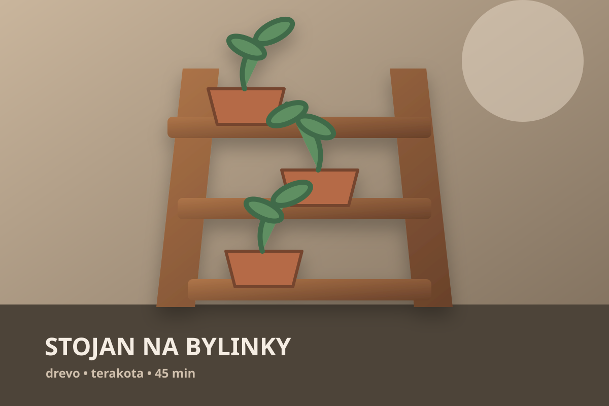
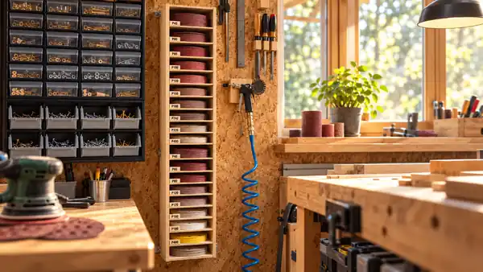
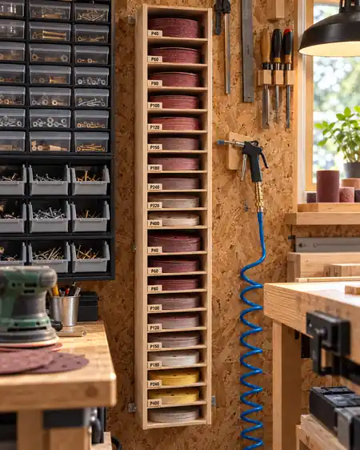
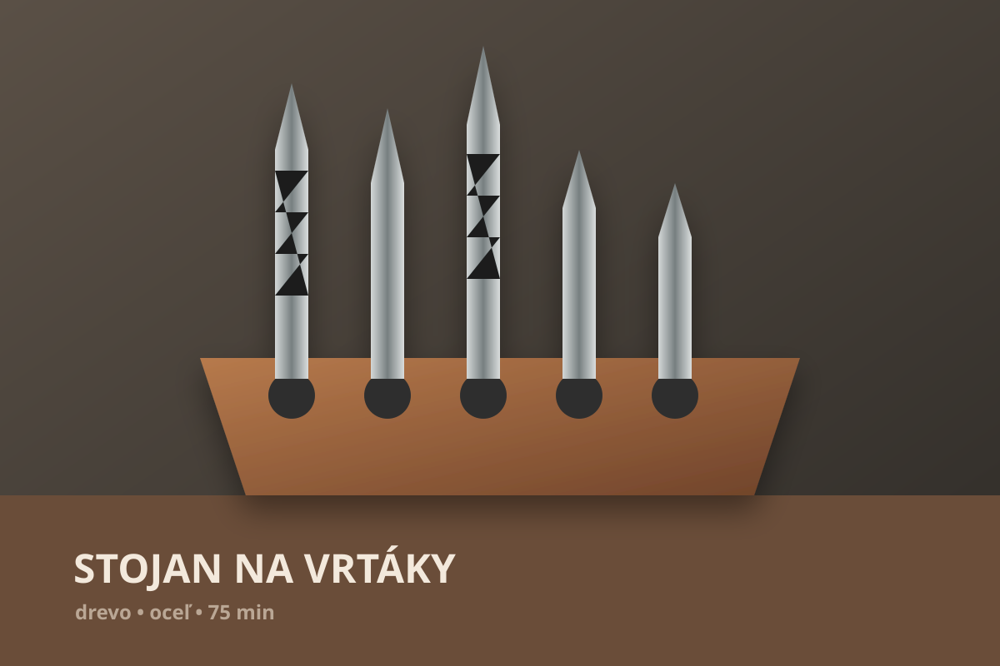
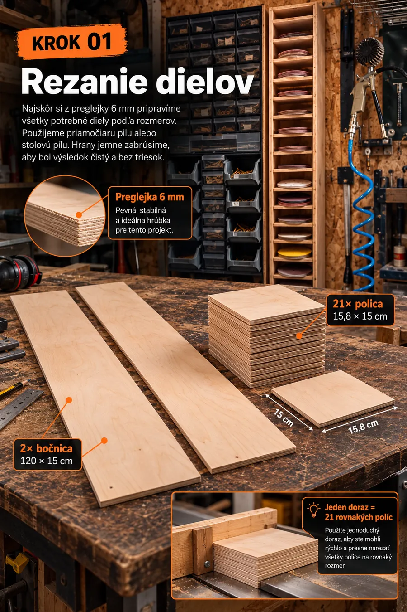
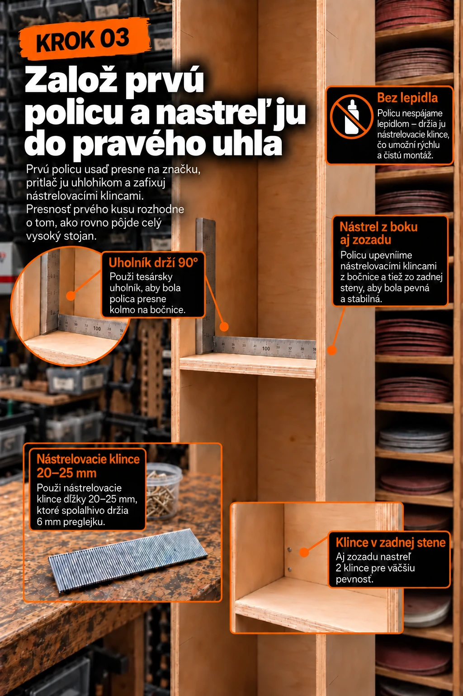
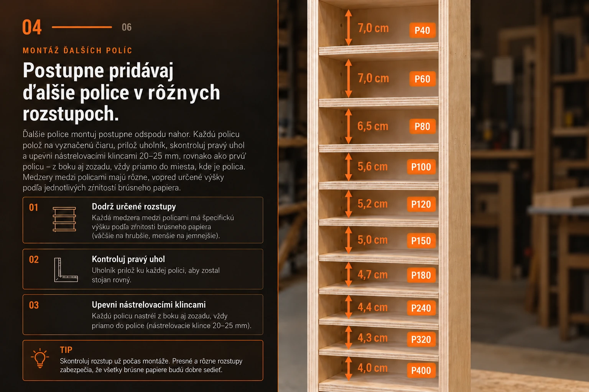

02 / ZÁHRADAStojan na
PRIPRAVUJEME

Urob si miesto pre lepšie nápady.
NÁPADY PRE SKUTOČNÝ ŽIVOT
Bez hádania. S rozmermi, materiálom a postupom, ktorý môžeš vziať rovno do dielne.
HOTOVÝ PROJEKT / 001

ORGANIZÉR NA BRÚSNE KOTÚČEOrganizér z 6 mm preglejky pre dva priemery kotúčov. Od hrubého P40 po jemné P400, každý má svoje miesto.
Pozrieť celý návod


03 / VYBER SI SMER
Kategórie smerujú na dostupné a pripravované projekty.
Šesť skutočných krokov z návodu na organizér. Každý krok má svoj obraz a konkrétny výsledok.




KROK 01 / 06Čo má stojan vyriešiť a čo treba pripraviť.
Zrnitosti dostanú presne odmerané výšky.
Pravý uhol určí presnosť celej zostavy.
Od hrubých kotúčov po jemné, s miestom podľa potreby.
Skontrolovať rovinu, uloženie a pevnosť.
Označiť P40 až P400 a uložiť kotúče.
05 / JEDNODUCHO A PORIADNE